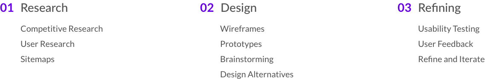
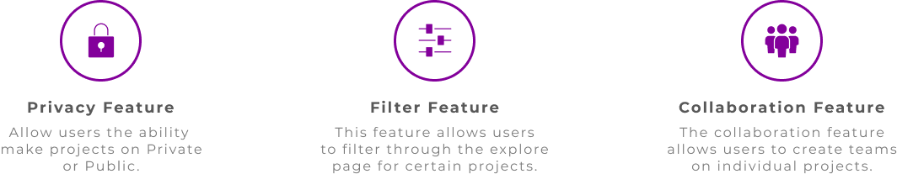

Project Overview
Design Hub was created with the intent to provide UX designers a platform for feedback and collaboration. This network also allows for potential employers to review the uploaded projects and consider candidates for employment.
The Problem
- Users found it difficult to filter through the explore page to find inspiration.
- The platform lacked basic features that could have a negative impact on the user experience.
My Contributions
As the lead UX designer, I was tasked to enhance the overall usability of the application. This was achieved by first identifying the central pain points. Furthermore, I conducted multiple user research trials that resulted in qualitative data used to improve the product design.
Our Approach

Project Overview
My Role
UX Designer, UX Researcher
Timeline
Nov 2019 - Jan 2020
Team Members
1 UX Designer, 7 Web Developers
Collaborators
This added feature allows users to add members to share team projects for ease of collaboration.
Access Levels
Another feature we added to the application was the ability for the initial owner to assign various levels of access to the project. The different levels of access grants the user the ability to edit, comment and view.
Filters
Design hub is a collaboration platform for all types of designers. A primary benefit to the explore page is inspiration for the user. One of the problems with the explore page was that the users did not have an efficient way to filter through projects. Within the findings of our research, we realized that the explore page was not engaging enough when compared to other competitors. As a results, users would seek inspiration from other platforms.
Research
Defining the problem
As the lead UX designer, my primary goal was to understand who our users were and what some of the problems they faced using Design Hub. I conducted five user interviews with UX designers to identify hidden frustrations and pain points within the platform. After reviewing the feedback from our users, I integrated the data into key points which in turn became actionable solutions.
Key Takeaways
- Users are not comfortable with strangers having the ability to comment on uploaded projects.
- Users would like to have the option to delegate projects private or public.
- Not everyone on the production team should have the ability to make changes or comments on projects.
- The explore page is difficult to navigate and filter to find different kinds of inspiration within the platform.
- Our users liked the idea of making teams / collaborating a more prominent feature within the platform similar to our competitors.
Learning from the competition
The following companies were chosen to conduct my competitive research. Through analysis, I was able to gain insight into some solutions that could be implemented in our product for a more user friendly experience. Our primary competitors are Trello, Invision and Abstract.

My main findings include
- The platforms researched granted users the ability to make projects public or private within their platform.
- Figma is the only competitor with an explore page which allows it's community to navigate through projects with a filter system.
- Most of the platforms researched allowed multiple users to collaborate on a single project.
The core functionalities I settled on after my research...

Design
Ideation
Based on the competitive research I began brainstorming possible solutions. Listed are the proposed solutions to enhance the user experience.
- Creating a privacy vs. public feature for team projects
- Adding a collaborators feature for users who wish to create teams on the platform
- A filters function on the explore page to improve the experience of searching for a genre of inspiration.


Mid-fi collaborators wireframes
I presented these mid-fi wireframes to the stakeholders to gain insight and direction for the most viable solution among the four. These wireframes also went through a dot voting process for clear direction.

Laying out the flow
The user flow below details the tasks and overall flow for users. The map also illustrated the steps users are to take for adding or removing team members.

The final outcome
Based on user feedback the team decided to go with the design below as users interacted with the prototype more intuitively in comparison to the other design iterations.

Access Level Feature / Privacy
For this feature we wanted to work on streamlining the flow of allowing users to grant and remove access to collaborators on projects. After brainstorming how we could achieve our goal we decided it would be more user-friendly to add the new feature on the "create projects" page.


Filter chip feature / Explore page re-design
For this feature I conducted competitive research to see what was the most efficient way for users to filter projects. Adding this feature would improve the process of searching for inspiration from other designers.
The previous design
The image below shows the previous design of the explore page. One of the problems with the explore page was that users did not find it engaging enough. The goal here was to make the page more appealing for users. We wanted to create a page that would deter users from seeking inspiration from other platforms.

The lo-fidelity comparison

A/B Testing feedback from our users
After processing the data we recieved from users we decided to go with the first iteration. We believed this was the right direction to go with to maintain the flow and feel of the application. The first iteration coincides with the personality of design hub as a whole.

Explore page Re-design
In order to make the page more engaging we removed a column and row of the projects in the grid. We also enlarged the images to give the layout better aspect ratio. The filter chips were added to the top of the explore page for users to easily filter through projects within the platform.

Final thoughts and takeaways
- A vital part of this project was the multiple iterations of user flows, these helped the team stay on aided developers grasp the flow of the new feature.
- Iterate and keep iterating. One of the benefits to iterations is that it allows stakeholders to see blind spots within the product and where we can continue to improve`.
- It's always best to keep clear goals in mind where all team members can see. This also helps designers and developers stay on track through out the ideation phase for optimal results.
Want to work together?
If you like what you see and want to work together, get in touch!
Peterd.noel@gmail.com